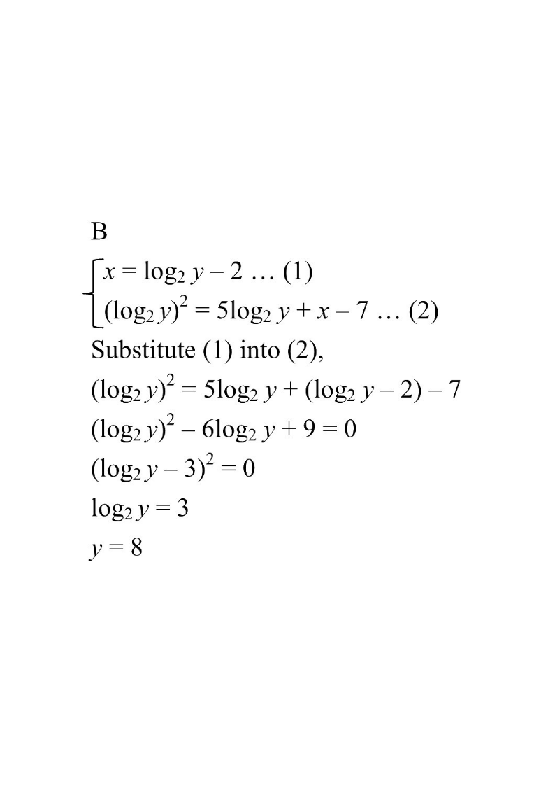

[2024MC#33]
If $x=\log_2 y-2$ and $\left(\log_2 y\right)^2=5\log_2 y+x-7$, then $y=$
A. $1$
B. $8$
C. $1$ or $3$
D. $3$ or $8$

Figure (original exam diagram)
Step-by-step solution
STEP 1 · SUBSTITUTE
Let $u=\log_2 y$. Then the two given equations become
\[ x=u-2 \quad\cdots(1) \]
\[ u^{2}=5u+x-7 \quad\cdots(2) \]
Substituting a common quantity with one letter turns a messy system into a single-variable problem.
STEP 2 · ELIMINATE x
Put (1) into (2):
\[ u^{2}=5u+(u-2)-7 \]
\[ u^{2}=5u+u-9 \]
Replace every $x$ with $u-2$ so only $u$ remains.
STEP 3 · QUADRATIC
Bring everything to one side:
\[ u^{2}-6u+9=0 \]
A quadratic in $u$ — check whether it factorises nicely.
STEP 4 · PERFECT SQUARE
Notice $u^{2}-6u+9=(u-3)^{2}$, so
\[ (u-3)^{2}=0 \;\Rightarrow\; u=3 \quad(\text{a repeated root}) \]
Discriminant $=36-36=0$, so there is exactly one value of $u$.
STEP 5 · BACK-SUBSTITUTE
Since $u=\log_2 y$,
\[ \log_2 y=3 \;\Rightarrow\; y=2^{3}=8 \]
Convert the logarithm back to index form: $\log_2 y=3 \iff y=2^{3}$.
STEP 6 · CHECK & ANSWER
Check $y=8$: $u=3$, $x=3-2=1$. In (2): $3^{2}=9$ and $5(3)+1-7=9$. ✓
So there is exactly one value, $y=8$.
A repeated root gives one solution, not two — eliminate options C and D.
Answer: B · $y=8$